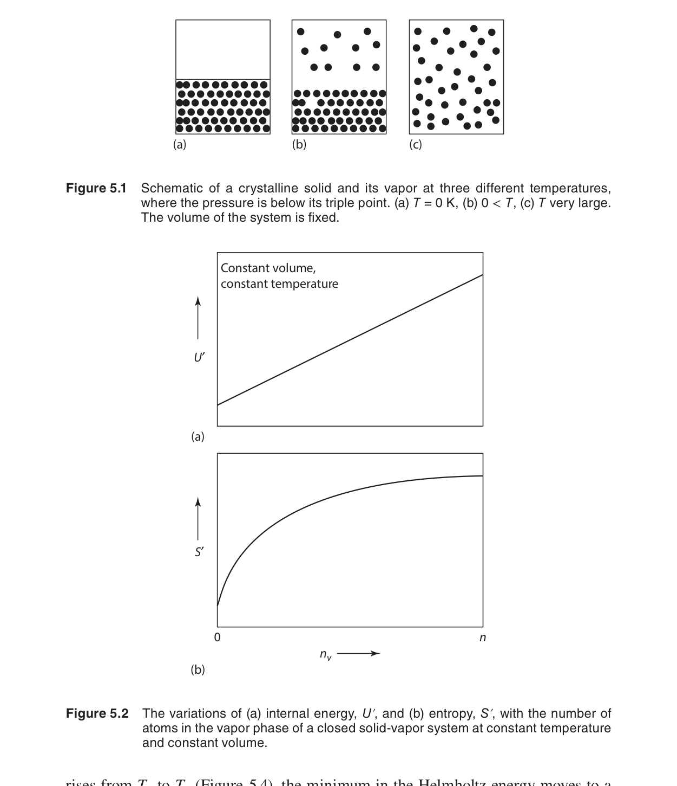
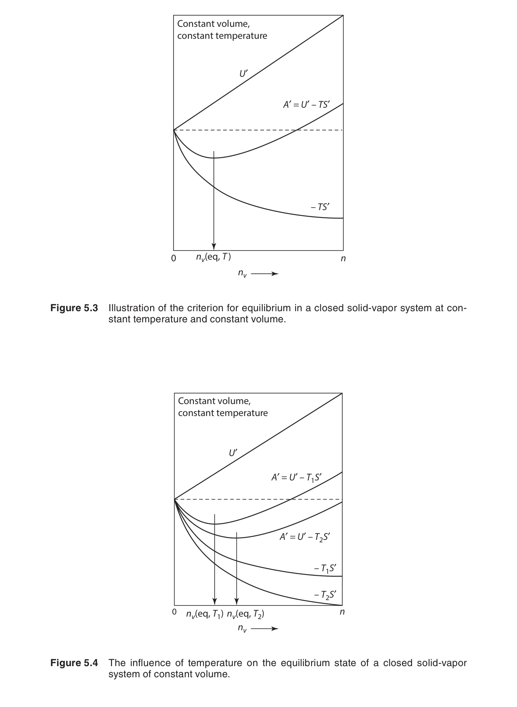
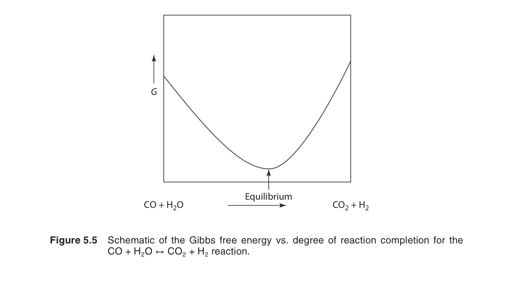
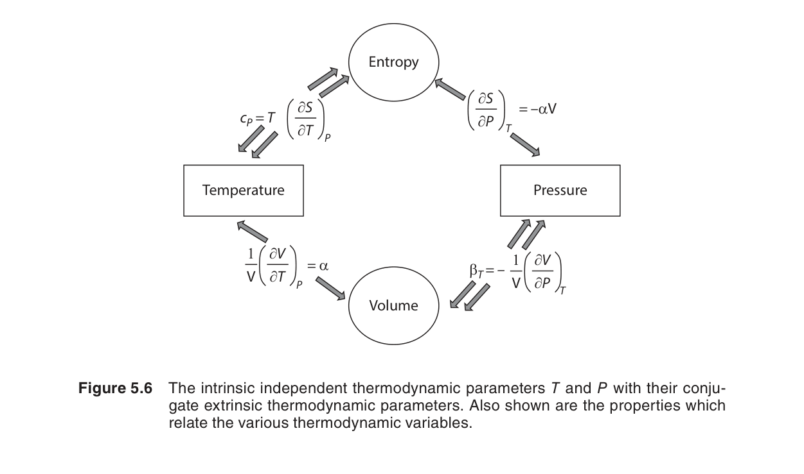
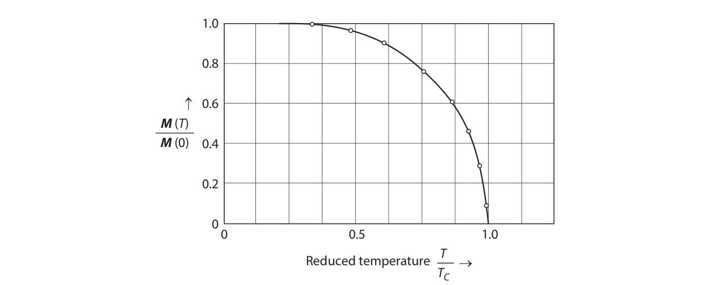
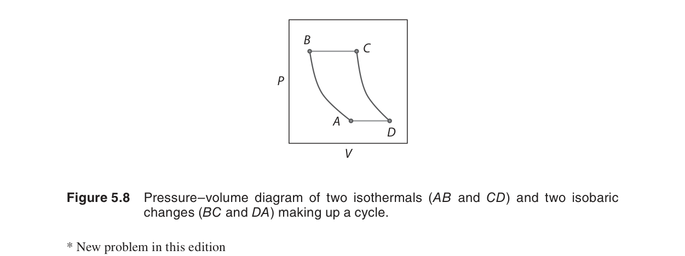

基本方程式與其關係
第三章末尾我們得到了四個基本方程式（$dU = T\,dS - P\,dV$ 等），但它們的威力遠不止於此。本章展示如何從這些基本方程式出發，通過數學操作（Legendre 變換、偏微分關係、Maxwell 關係）推導出大量實用的熱力學關係——這些關係讓我們可以用容易測量的量（如 $C_P$、熱膨脹係數 $\alpha$、壓縮係數 $\beta$）來計算難以直接測量的量（如 $(\partial S/\partial P)_T$）。
在本章中，我們將學習：
- Legendre 變換——從 $U(S,V)$ 到 $H(S,P)$、$A(T,V)$、$G(T,P)$
- 化學位 $\mu$ 的定義與物理意義
- Maxwell 關係——四個對稱的偏微分關係
- 用 $C_P$、$\alpha$、$\beta$ 表達熱力學量的方法
- Gibbs–Helmholtz 方程式——$\Delta G$ 與溫度關係
🧭 本章推理地圖
- 已知條件：第三章的基本式提供 $U(S,V)$，但實驗常控制 $T,P$（§5.1–§5.2）。
- 中間機制：Legendre 變換建立 $H,A,G$，化學位處理成分變化（§5.2–§5.7）。
- 可預測結果：Maxwell 關係把難測偏導數轉成可測的 $P,V,T$ 響應（§5.8–§5.11）。
- 工程用途：Gibbs–Helmholtz 方程連接溫度、焓與自由能，用於反應與相平衡計算（§5.12、Ch11、Ch12）。
5.1 導論（Introduction）
從第三章的組合定律 $dU = T\,dS - P\,dV$ 出發，本章系統性地展開熱力學的數學結構。核心思想是：Legendre 變換允許我們將基本變數從 $(S,V)$ 換成更方便的組合，如 $(T,P)$——這正是材料科學中最常見的實驗條件。
這些數學操作不是抽象的——每一次變換都對應一個具有明確物理意義的熱力學位（thermodynamic potential）：
| 位 | 定義 | 自然變數 | 平衡條件 |
|---|---|---|---|
| $U$ | 內能 | $S, V$ | $dU = 0$（$S,V$ 固定） |
| $H = U + PV$ | 焓 | $S, P$ | $dH = 0$（$S,P$ 固定） |
| $A = U - TS$ | 亥姆霍茲自由能 | $T, V$ | $dA = 0$（$T,V$ 固定） |
| $G = H - TS$ | 吉布斯自由能 | $T, P$ | $dG = 0$（$T,P$ 固定）⭐ |

Legendre 變換是熱力學中最強大的數學工具之一。其核心思想是：如果一個函數的自然變數不方便實驗控制，我們可以通過變換將原變數換成其共軛變數（conjugate variable）。
▸ 步驟 1：從 $U$ 到 $H$（將 $V$ 換成 $P$）
由 $dU = T\,dS - P\,dV$，知 $V$ 的共軛變數為 $-P = (\partial U/\partial V)_S$。
全微分類推：
新函數 $H(S,P)$ 的自然變數是 $S$ 和 $P$，其中 $P$ 是實驗易控的強度變數。
▸ 步驟 2：從 $U$ 到 $A$（將 $S$ 換成 $T$）
$S$ 的共軛變數為 $T = (\partial U/\partial S)_V$。
▸ 步驟 3：從 $H$ 到 $G$（將 $S$ 換成 $T$）
在 $H(S,P)$ 的基礎上再做一次 Legendre 變換，將 $S$ 換成 $T$：
▸ 步驟 4：跳過中間步驟——直接從 $U$ 到 $G$
也可以對 $U$ 同時做兩次 Legendre 變換（$S \rightarrow T$, $V \rightarrow P$）：
▸ 統一觀點：每一次 Legendre 變換都將一個「不易直接控制」的廣義變數（$S$ 或 $V$）替換為其共軛的「易控制」強度變數（$T$ 或 $P$）。最終的 $G(T,P)$ 是最實用的形式，因為溫度和壓力是實驗室中最容易控制的變數。下表總結了這些變換：
| 變換 | 原函數 | 新函數 | 替換規則 | 新自然變數 |
|---|---|---|---|---|
| $U \to H$ | $U(S,V)$ | $H = U + PV$ | $V \to P$ | $(S,P)$ |
| $U \to A$ | $U(S,V)$ | $A = U - TS$ | $S \to T$ | $(T,V)$ |
| $H \to G$ | $H(S,P)$ | $G = H - TS$ | $S \to T$ | $(T,P)$ |
| $U \to G$ | $U(S,V)$ | $G = U - TS + PV$ | $S \to T$, $V \to P$ | $(T,P)$ |
📝 自編概念例：選擇熱力學位
題目：常壓高溫爐中比較兩相穩定性，最自然使用哪個熱力學位？
解：溫度與壓力最容易控制，因此使用 $G(T,P)$；低 $G$ 的相在該條件下較穩定。
物理意義：選擇熱力學位就是選擇與實驗約束相符的能量函數。
5.2–5.4 焓、亥姆霍茲自由能與吉布斯自由能
焓 $H = U + PV$（自然變數 $S, P$）
焓在定壓過程中特別方便——$dH = \delta q_P$（第二章）。在流動系統和化學反應器中，焓是追蹤能量變化的首選。
亥姆霍茲自由能 $A = U - TS$（自然變數 $T, V$）
定溫定容條件下的平衡判據（$dA = 0$，$A$ 最小）。等溫過程中系統的最大功 $w_{\text{max}} = \Delta A$。
吉布斯自由能 $G = H - TS$（自然變數 $T, P$）⭐
這是材料熱力學中使用頻率最高的熱力學位。原因很簡單：大多數材料製程和化學反應在定溫定壓下進行。$\Delta G < 0$ 是自發過程的判據；$\Delta G = 0$ 是平衡條件。
自然變數（Natural Variables）的深刻意義
為什麼要強調「自然變數」？因為每個熱力學位在其自然變數下具有最簡潔的微分形式。例如 $G(T,P)$ 之所以特別重要，是因為 $T$ 和 $P$ 恰好是實驗中最容易控制的變數。當一個系統在固定 $T$ 和 $P$ 下達到平衡時，$G$ 取最小值——這是化學反應和相平衡的理論基礎。
相反，如果我們嘗試用「非自然」的變數表達 $G$（比如用 $S$ 和 $V$ 表達 $G$），數學形式會非常複雜。這就是 Legendre 變換的威力所在：它保證了每個熱力學位在其自然變數下的形式最簡單。
各熱力學位的物理圖像
$U(S,V)$：內能是隔離系統的適當位。在 $S$ 和 $V$ 固定的隔離系統中，平衡對應於 $U$ 最小。這在概念上很重要，但在實際計算中很少直接使用，因為隔離系統的假設過於嚴格。
$H(S,P)$：焓在定壓絕熱過程中扮演重要角色——$\Delta H = q_P$（系統吸收的熱量等於焓變）。此外，在穩流系統中（如渦輪機、壓縮機），$H$ 的變化直接對應於軸功。
$A(T,V)$：亥姆霍茲自由能在定溫定容條件下是平衡判據。$\Delta A$ 給出等溫過程中系統所能做的最大功（包括 $P$–$V$ 功和非 $P$–$V$ 功）。在統計熱力學中，$A$ 直接與配分函數 $Q$ 相關：$A = -kT\ln Q$（參見第十六章）。
$G(T,P)$：吉布斯自由能是材料科學和化學中使用最頻繁的熱力學位。除了前文提到的性質外，$G$ 還有一個重要特性：$G = \sum_i n_i \mu_i$（第九章），即系統的吉布斯自由能等於各成分化學位乘以莫耳數的總和。

| 位 | 定義 | 自然變數 | 微分形式 | 平衡條件 |
|---|---|---|---|---|
| $U$ | 內能 | $S, V$ | $dU = T\,dS - P\,dV$ | $dU = 0$（$S,V$ 固定） |
| $H$ | $U + PV$ | $S, P$ | $dH = T\,dS + V\,dP$ | $dH = 0$（$S,P$ 固定） |
| $A$ | $U - TS$ | $T, V$ | $dA = -S\,dT - P\,dV$ | $dA = 0$（$T,V$ 固定） |
| $G$ | $H - TS$ | $T, P$ | $dG = -S\,dT + V\,dP$ | $dG = 0$（$T,P$ 固定） |
📝 自編概念例：A 與 G 的使用差異
題目：同一反應若在剛性密閉容器中定溫進行，應看 $A$ 還是 $G$？
解：定溫定容條件下使用 Helmholtz 自由能 $A$，而不是 $G$。
物理意義：自由能判據必須配合被固定的自然變數。
5.5–5.6 封閉系統的基本方程式與成分變化
對於一個組成可變的封閉系統（成分之間可以反應，但總質量守恆），基本方程式需要加入化學功項：
相應地：
這四個方程式中，$\mu_i = (\partial G/\partial n_i)_{T,P,n_{j\neq i}}$ 是成分 $i$ 的化學位（chemical potential）。
上述四個基本方程式（5.1–5.4）的根源是第三章的組合定律（combined first and second law）：
這個式子是從 $dU = \delta q + \delta w$（第一定律）和 $dS = \delta q_{\text{rev}}/T$（第二定律）結合推導而來，假設過程可逆且僅有 $P$–$V$ 功。詳細推導請回顧第三章第 3.8–3.9 節。
本章的貢獻在於：通過 Legendre 變換，將這個基本方程式轉化為三個等價的形式（$dH$、$dA$、$dG$），並從中提取出 Maxwell 關係和 Gibbs–Helmholtz 方程式等強大工具。這四個方程式構成了整個化學熱力學的數學基礎。
📝 自編概念例：何時需要化學位項
題目：固相與液相之間交換溶質原子時，基本方程式是否需要組成項？
解：需要。因為 $dn_i\ne0$，能量變化包含 $\mu_i dn_i$ 項。
物理意義：化學位控制成分在不同相之間的平衡與遷移方向。
5.7 化學位（The Chemical Potential）
化學位 $\mu_i$ 是熱力學中最重要但最難直觀理解的概念之一。它的物理意義是：在定溫定壓下，向系統添加 1 莫耳成分 $i$ 所引起的吉布斯自由能變化。
化學位可以從四個熱力學位等價地定義：
化學位驅動質量傳遞——就像溫度差驅動熱流、壓力差驅動體積變化一樣，化學位差驅動物質從一個相或區域流向另一個。在平衡時，每個成分在所有相中的化學位必須相等。

化學位的物理圖像
想像一個由兩種氣體 $A$ 和 $B$ 組成的混合物，中間有一半透膜隔開。如果膜只允許 $A$ 通過，則 $A$ 會從化學位高的一側流向化學位低的一側——直到兩側的 $\mu_A$ 相等。這個過程完全類比於：熱量從高溫流向低溫（$T$ 差驅動）、體積從高壓流向低壓（$P$ 差驅動）。
在定溫定壓下，系統的吉布斯自由能是各成分化學位的加權和：
這個關係在第九章（溶液熱力學）中會反覆使用，是理解偏莫耳量（partial molar quantities）的關鍵。
📝 自編概念例：相平衡的化學位條件
題目：成分 A 可在 $\alpha$ 相與 $\beta$ 相間交換，平衡時需滿足什麼條件？
解：必須有 $\mu_A^\alpha=\mu_A^\beta$。若不相等，A 會由高化學位相流向低化學位相。
物理意義：相圖中的 tie-line 與分配平衡都建立在化學位相等上。
5.8 熱力學關係（Thermodynamic Relations）
從基本方程式可以讀出許多有用的偏微分關係。例如，從 $dU = T\,dS - P\,dV$：
從 $dG = -S\,dT + V\,dP$：
這些係數關係（coefficient relations）是推導 Maxwell 關係的基礎。
完整的係數關係
四個基本方程式各給出兩個係數關係，總共八個：
| 來源 | 係數關係 1 | 係數關係 2 |
|---|---|---|
| $dU = T\,dS - P\,dV$ | $T = (\partial U/\partial S)_V$ | $-P = (\partial U/\partial V)_S$ |
| $dH = T\,dS + V\,dP$ | $T = (\partial H/\partial S)_P$ | $V = (\partial H/\partial P)_S$ |
| $dA = -S\,dT - P\,dV$ | $-S = (\partial A/\partial T)_V$ | $-P = (\partial A/\partial V)_T$ |
| $dG = -S\,dT + V\,dP$ | $-S = (\partial G/\partial T)_P$ | $V = (\partial G/\partial P)_T$ |
注意 $T$ 和 $S$、$P$ 和 $V$ 總是成對出現——這不是巧合，而是 Legendre 變換中「共軛變數」概念的體現。
📝 自編概念例：從 dG 讀係數
題目：由 $dG=-S\,dT+V\,dP$，在定壓下 $(\partial G/\partial T)_P$ 等於什麼？
解：定壓時 $dP=0$，所以 $(\partial G/\partial T)_P=-S$。
物理意義：自然變數下的偏導數直接給出共軛熱力學量。
5.9 Maxwell 關係式（Maxwell's Relations）
Maxwell 關係是本章最實用的數學結果。它們來自正合微分的交叉偏導數相等性質（$\partial^2 f/\partial x\partial y = \partial^2 f/\partial y\partial x$），應用於四個基本方程式：
Maxwell 關係的威力：它們將難以測量的量（如 $(\partial S/\partial P)_T$——壓力對熵的影響）與容易測量的量（如 $(\partial V/\partial T)_P$——熱膨脹係數乘以 $V$）聯繫起來。
Maxwell 關係的數學基礎是正合微分（exact differential）的性質。如果一個函數 $f(x,y)$ 有正合微分 $df = M\,dx + N\,dy$，則交叉偏導數相等：
▸ 從 $dU$ 推導 Maxwell 關係 1：
$dU = T\,dS - P\,dV$。此處 $M = T$，$N = -P$，$x = S$，$y = V$。
▸ 從 $dH$ 推導 Maxwell 關係 2：
$dH = T\,dS + V\,dP$。此處 $M = T$，$N = V$，$x = S$，$y = P$。
▸ 從 $dA$ 推導 Maxwell 關係 3：
$dA = -S\,dT - P\,dV$。此處 $M = -S$，$N = -P$，$x = T$，$y = V$。
▸ 從 $dG$ 推導 Maxwell 關係 4（最常用）：
$dG = -S\,dT + V\,dP$。此處 $M = -S$，$N = V$，$x = T$，$y = P$。
▸ 使用熱力學方塊的記憶法：
在方塊的四角寫上 $S, T, P, V$（順時針），外圍寫上 $U, H, A, G$。從一個變數到另一個變數沿著方塊邊緣移動，遵循「正號指向右/上，負號指向左/下」的規則，即可快速寫出所有四個 Maxwell 關係。

Maxwell 關係的應用示例
示例 1：計算 $(∂S/∂P)_T$
假設我們想知道壓力變化對熵的影響。直接測量 $(∂S/∂P)_T$ 非常困難（需要測量可逆熱量變化）。但利用 Maxwell 關係：
其中 $\alpha$ 是熱膨脹係數。因此只需測量 $V(T)$ 即可得到答案。
示例 2：從 $dU = T\,dS - P\,dV$ 出發推導 $(∂U/∂V)_T$
將 $dS$ 在 $T$ 和 $V$ 下展開：
定溫下 $dT = 0$：
代入 Maxwell 關係 $(∂S/∂V)_T = (∂P/∂T)_V$：
這正是將在下一節看到的公式（5.13）。
📝 自編概念例：把熵偏導換成體積偏導
題目：若需要 $(\partial S/\partial P)_T$，可用哪個 Maxwell 關係轉換？
解：由 $dG=-S\,dT+V\,dP$ 得 $(\partial S/\partial P)_T=-(\partial V/\partial T)_P$。
物理意義：難以直接量測的熵壓力效應可由熱膨脹資料求得。
5.10 Maxwell 關係的應用
本節展示如何用 Maxwell 關係將熱力學量表達為可測量的量（$C_P$、$C_V$、$\alpha$、$\beta$）：
熱膨脹係數 $\alpha$ 與壓縮係數 $\beta$
$C_P$ 與 $C_V$ 的關係
對理想氣體，$\alpha = 1/T$，$\beta = 1/P$，代入得 $C_P - C_V = R$——與第二章的結果一致。
內能對體積的依賴
對理想氣體，$P = RT/V$，$(\partial P/\partial T)_V = R/V$，代入得 $(\partial U/\partial V)_T = 0$——理想氣體的內能與體積無關。
焓對壓力的依賴
熱容量的定義：
將熵寫為 $S(T, V)$ 的全微分：
在定壓下，$dV = \left(\frac{\partial V}{\partial T}\right)_P dT$，代入：
兩端乘以 $T$：
代入 Maxwell 關係 $(∂S/∂V)_T = (∂P/∂T)_V$：
由循環關係（triple product rule）：
代入得：
從基本方程式 $dU = T\,dS - P\,dV$ 出發。將 $S$ 視為 $T$ 和 $V$ 的函數：
定溫下 $dT = 0$：
代入 Maxwell 關係 $(∂S/∂V)_T = (∂P/∂T)_V$：
物理意義：對理想氣體，$PV = RT$，$(∂P/∂T)_V = R/V$，代入得 $(∂U/∂V)_T = RT/V - P = 0$。這印證了理想氣體內能與體積無關的結論。對真實氣體和液體，$(∂U/∂V)_T$ 通常不為零，反映了分子間作用力的存在。

更多的應用範例
應用：計算 $(∂H/∂P)_T$
從 $dH = T\,dS + V\,dP$ 出發：
代入 $(∂S/∂P)_T = -(∂V/∂T)_P$：
對理想氣體，$(\partial V/\partial T)_P = R/P = V/T$，代入得 $(∂H/∂P)_T = 0$——理想氣體的焓與壓力無關，僅與溫度有關。
實用總結：Maxwell 關係的常見應用
| 欲求量 | Maxwell 關係 | 可測量表達 |
|---|---|---|
| $(∂S/∂P)_T$ | $(∂S/∂P)_T = -(∂V/∂T)_P$ | $-\alpha V$ |
| $(∂S/∂V)_T$ | $(∂S/∂V)_T = (∂P/∂T)_V$ | $\alpha/\beta$ |
| $(∂U/∂V)_T$ | (via Maxwell) | $T\alpha/\beta - P$ |
| $(∂H/∂P)_T$ | (via Maxwell) | $V - T\alpha V$ |
| $C_P - C_V$ | (via Maxwell) | $TV\alpha^2/\beta$ |
📝 自編概念例：理想氣體的 $C_P-C_V$
題目：理想氣體中 $\alpha=1/T$、$\beta=1/P$、$V=RT/P$，代入 $C_P-C_V=TV\alpha^2/\beta$ 得到什麼？
解：$C_P-C_V=T(RT/P)(1/T^2)/(1/P)=R$。
物理意義：一般公式可回到第二章理想氣體結果，驗證 Maxwell 關係的一致性。
5.11 另一個重要公式
另一個經常使用的關係是熵對溫度和壓力的全微分：
這使我們可以在已知 $C_P(T)$ 和 $V(P,T)$ 的情況下，計算任意過程的熵變。
熵是狀態函數，因此 $dS$ 是正合微分。將 $S$ 寫為 $T$ 和 $P$ 的函數：
由熱容量定義：
代入 Maxwell 關係 $(∂S/∂P)_T = -(∂V/∂T)_P$：
這個公式的實用價值在於：它將熵變表達為完全可測量的量——$C_P(T)$ 和 $V(P,T)$ 的溫度導數。
應用：計算 $\Delta S$
對從 $(T_1, P_1)$ 到 $(T_2, P_2)$ 的任意過程：
對理想氣體，$(∂V/∂T)_P = R/P$，第二項積分為 $-R\ln(P_2/P_1)$，與第三章的結果一致。
📝 自編概念例：定壓升溫的熵變
題目：若壓力固定，$dS=\frac{C_P}{T}dT-(\partial V/\partial T)_P dP$ 如何簡化？
解：定壓下 $dP=0$，所以 $dS=C_P dT/T$。
物理意義：定壓加熱的熵變可由熱容量隨溫度的積分求得。
上述公式中的第一項 $\int C_P/T\,dT$ 是第六章的核心內容。第六章將展示如何從實驗測得的 $C_P(T)$ 數據（如 Debye 模型、Shomate 方程式）積分得到熵的絕對值 $S(T)$。
此外，Maxwell 關係也為 Kirchhoff 定律提供了另一種推導路徑。Kirchhoff 定律（第六章）描述反應焓 $\Delta H$ 如何隨溫度變化：
這個關係可以從 Gibbs–Helmholtz 方程式和 Maxwell 關係出發得到嚴格證明。
5.12 Gibbs–Helmholtz 方程式
Gibbs–Helmholtz 方程式將吉布斯自由能的溫度依賴性與焓聯繫起來：
等價形式：
這是最實用的形式——知道反應的 $\Delta H$，就可以計算 $\Delta G$ 如何隨溫度變化。這是 Ellingham 圖（第十二章）和 van't Hoff 方程式（第十一章）的理論基礎。
從 $G$ 的定義 $G = H - TS$ 和係數關係 $-S = (\partial G/\partial T)_P$ 出發：
兩端除以 $T$：
現在計算 $(∂(G/T)/∂T)_P$：
因此：
推廣到 $\Delta G$ 和 $\Delta H$：
對於一個化學反應或相變過程，初始態和最終態都滿足上式，相減得：
實用的積分形式：
若 $\Delta H$ 近似為常數（溫度範圍不大時）：
這正是 van't Hoff 方程式的基礎（第十一章），也是 Ellingham 圖中直線斜率的來源（第十二章）。

Gibbs–Helmholtz 方程式的應用場景
1. Ellingham 圖（第十二章）
Ellingham 圖繪製 $\Delta G^\circ$ 對 $T$ 的關係，廣泛用於冶金和材料科學中判斷氧化還原反應的可行性。圖中直線的斜率直接對應於 $-\Delta S^\circ$，而截距與 $\Delta H^\circ$ 相關。
2. van't Hoff 方程式（第十一章）
化學反應的平衡常數 $K$ 與 $\Delta G^\circ$ 的關係為 $\Delta G^\circ = -RT\ln K$。代入 Gibbs–Helmholtz 方程式：
這是 van't Hoff 方程式的常見形式，用於從不同溫度下的平衡常數數據計算反應焓變。
3. 相變溫度預測（第七章）
在相變點（如熔點 $T_m$），兩相的吉布斯自由能相等：$\Delta G_{\text{ fus}} = 0$。Gibbs–Helmholtz 方程式可用於預測壓力對相變溫度的影響——這是第七章 Clausius–Clapeyron 方程式的理論來源。
第七章將展示：為什麼 $dG = 0$ 是相平衡的判據。在定溫定壓下，兩相平衡時 A 相和 B 相的吉布斯自由能相等：$G^\alpha = G^\beta$。由此可推導出 Clausius–Clapeyron 方程式：
這描述了一級相變的相界斜率，是 Maxwell 關係和 Gibbs–Helmholtz 方程式的直接應用。
📝 自編概念例：Gibbs–Helmholtz 的用途
題目：若已知某反應在 1000 K 的 $\Delta G$ 與近似常數 $\Delta H$，想估 1200 K 的 $\Delta G$，本節用哪個工具？
解：使用 Gibbs–Helmholtz 方程式的積分形式，計算 $\Delta G/T$ 隨 $T$ 的改變。
物理意義：這讓高溫冶金與 Ellingham 圖可由有限熱力學資料外推。
初學者常見錯誤
自我檢測
1. 為什麼定溫定壓下常用 $G$ 判斷平衡？
$G$ 的自然變數是 $T,P$，微分式為 $dG=-S\,dT+V\,dP+\sum_i\mu_i dn_i$。在固定 $T,P$ 下，系統會朝降低 $G$ 的方向變化，平衡時 $G$ 最小。
正文依據：§5.1–§5.4
2. Maxwell 關係如何幫助測量熵的壓力效應？
由 $dG$ 可得 $(\partial S/\partial P)_T=-(\partial V/\partial T)_P$，把難測的熵偏導數換成可由熱膨脹量測得到的體積偏導數。
正文依據：§5.8–§5.10
3. 化學位相等代表什麼平衡條件？
若成分可在兩相間交換，平衡要求同一成分在兩相中的化學位相等；若不相等，物質會由高 $\mu$ 流向低 $\mu$。
正文依據：§5.7
延伸資源與下一章
本章摘要
- 四個基本方程式：$dU = T\,dS - P\,dV$，$dH = T\,dS + V\,dP$，$dA = -S\,dT - P\,dV$，$dG = -S\,dT + V\,dP$。含化學位項時加入 $\sum\mu_i dn_i$。
- 化學位：$\mu_i = (\partial G/\partial n_i)_{T,P,n_{j\neq i}}$。驅動質量傳遞；平衡時各相 $\mu_i$ 相等。
- Maxwell 關係：四個對稱關係，最常用的是 $(\partial S/\partial P)_T = -(\partial V/\partial T)_P$。
- 可測量表達：$C_P - C_V = TV\alpha^2/\beta$。$(\partial U/\partial V)_T = T(\partial P/\partial T)_V - P$。
- Gibbs–Helmholtz：$(\partial (\Delta G/T)/\partial T)_P = -\Delta H/T^2$。連接 $\Delta G$、$\Delta H$、$T$。